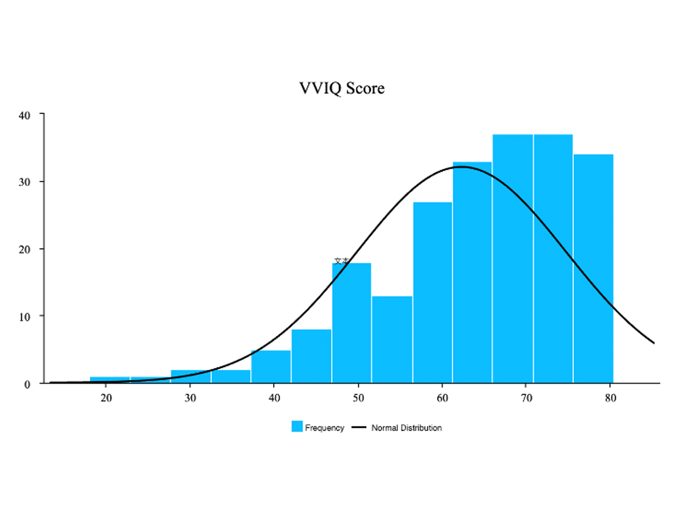

|
崔浡然 我是北京大学附属中学的一名高中生。我对心理学和神经科学感兴趣。我为自己是 Gay 而自豪，并继续从事 HIV 社区服务。 我还对科技和人工智能感兴趣。在高中一年级期间，我为多个 AI 和科技媒体贡献了文章，积累了丰富的经验。 我曾在知名初创公司如FlowGPT和Moonshot AI（月之暗面）实习。我负责增长和运营任务，在产品相关领域积累了大量经验。 我一直在自豪的坚持“透明成长路径”（Transparent growth path），并提供所有（学术、兴趣上的）可识别的成长路径以供审查。我自豪地坚持着“100% Made by myself”的概念，即不接受任何形式的家庭资源帮助。 微信 / E-Mail / 个人简介（英文版） / Google Scholar / Twitter (X) / Research Gate / 透明发展路径 PDF（未上线） |
{kind=link}
研究我对神经科学和认知心理学感兴趣。我正在努力完成我感兴趣的研究并准备发表论文。 |
|  |
Exploring the Connections between Romantic Desire and Mental Imagery
Boran Cui, Yuhan Liu, Zhenxiong Wen, Weibo Zhang* The Frontiers of Society, Science and Technology, 2023 Francis Academy / PDF This study finds that stronger mental imagery abilities are linked to better recall, continuity, and frequency of romantic feelings and relationships among high school students. |
部分奖项和荣誉 |
|
道尔顿学院研究基金
总资金: CNY 4,000 来自: 北京大学附属中学 |
|

|
2023年中国生物物理学会中学生卓越论坛“优秀研究报告”
排名: 前10名 来自: 中国生物物理学会 |
|
China BrainBee 2023
奖项: 三等奖 排名: 中国第 128 名 |
活动 |
|
北京大学全球精英人才A计划
简介: 北京大学全球精英人才A计划（简称“北大A计划”）是由北京大学心理与认知科学学院发起的、北京大学培典书院全球英才教育基金专项资助的中国拔尖创新青少年选拔与培养计划，旨在识别并培养全国范围内的青少年拔尖创新人才，以期其未来能够在各行业引领社会发展，做出卓越的成绩，取得突破性进展。 职位: 第六届（2023）学员 |
|

|
AdventureX
简介: AdventureX 是一个真正本土化的全球黑客马拉松平台，根植于中国，推动创客文化的影响力。2024年7月，AdventureX将在杭州举办中国最大的青少年线下黑客马拉松活动，为期五天。AdventureX是离梦想最近的地方，是一个真正的创客乌托邦。 职位: 联合创始人，核心团队成员 |
|
在这里了解我朋友的工作。 该模板是对Chengbo Yuan和Jon Barron网站的修改。 查看英文版。 |